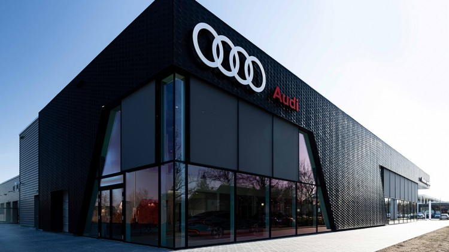

Auto Salon MD d.o.o je osnovan 2022.godine u Zavidovićima, Bosna i Hercegovina.
Svoj put počinjemo suradnjom sa jednim od najvećih giganta automobilske industrije - Audijem. Audi potječe iz njemačkog grada Ingolstadta radi pod rukovodstvom VAG (Volkswagen Aktiengesellschaft) grupacije. Bavimo se prodajom isključivo novih Audi vozila.
Vlasnik Auto Salona MD je Maid Dubravac, Bsc. Inžinjer saobraćaja i komunikacija. Rođen je u Zenici 1998.godine. Ideja za Auto Salonom i sklapanjem ugovora sa Audi firmom je došla nakon opsesivne ljubavi prema ovom brendu. Iako smo tek na početku našeg poslovanja, nadamo se da ćemo godinama opravdati povjerenje kupaca te sklopiti suradnju i sa ostalim popularnim brendovima automobilske industrije.
Sada da se bacim malo na svoj projektni zadatak. Naime, potpuno sam se posvetio ovome najviše iz razloga da naučim kako da napravim web sajt. Bilo je pomoći interneta, materijala sa predavanja, raznih izmijenjenih template-a ali u konačnici smatram da sam uradio prilično funkcionalnu i lijepu web stranicu. Iako je profesor bio malo skeptičan, uspio sam implementirati formu za ugovaranje testne vožnje kao i kontakt formu tako što će unosi dolaziti na email. To sam uspio pomoću FormSubmit.co websajta koji nudi kontakt forme preko svog API-a bez backenda uopšte. Dakle, ne treba JavaScript za neke "komplikovane" zahvate. Rješenje je bilo ili FormSubmit ili PHP skripte, naravno da ću uzeti ovo lakše. :)

Projektni zadatak iz predmeta "Web arhitekture". Powered by Maid Dubravac (maid.dubravac@fsk.unsa.ba).